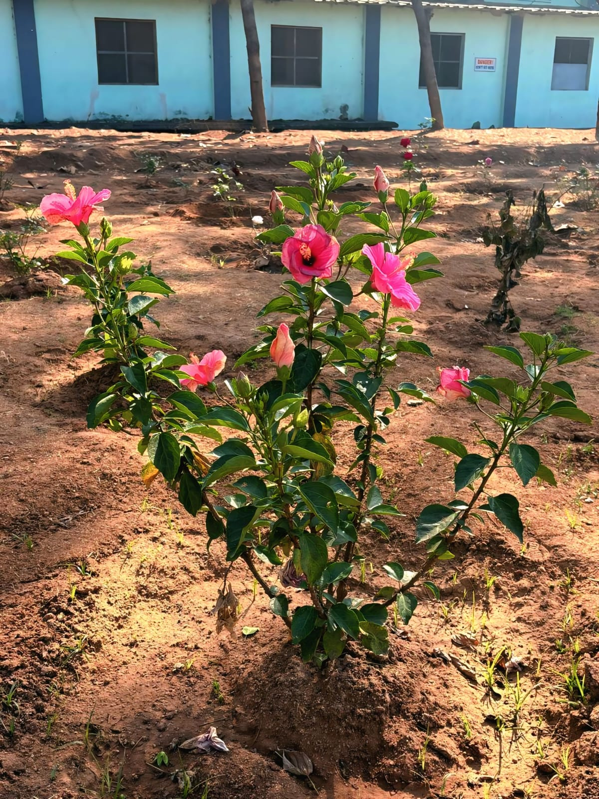
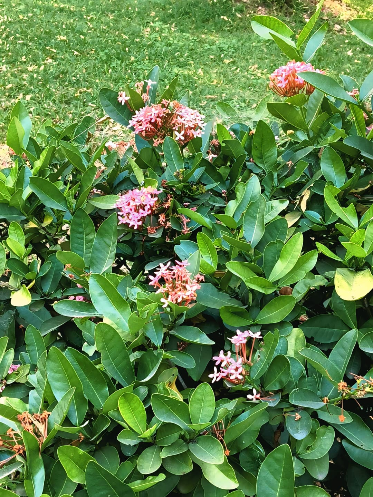
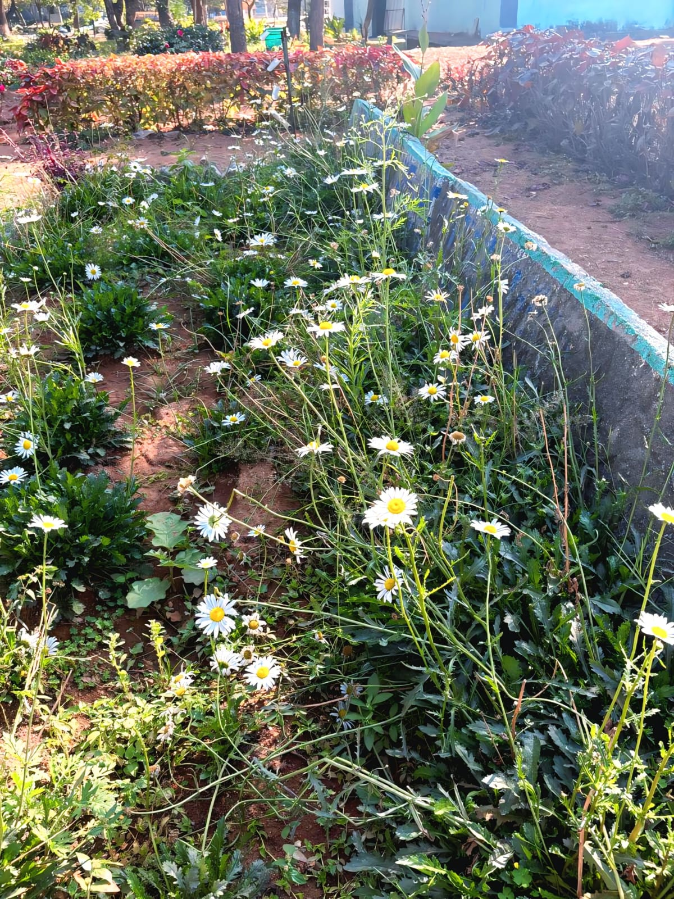

Temple Tree / Frangipani
Scientific Name:Plumeria alba
This plant is a small ornamental tree known for its fragrant white flowers and glossy green leaves. It is commonly grown in gardens and temples for its beauty and pleasant aroma.

Crown of Thorns
Scientific Name:Euphorbia milii
This is a thorny succulent plant with small colorful flowers that bloom throughout the year. It is drought-tolerant and widely used as an ornamental garden plant.

Hibiscus / Shoe Flower
Scientific Name:Hibiscus rosa-sinensis
Hibiscus is a flowering shrub famous for its large and attractive pink flowers. It is commonly used in landscaping and also has medicinal and decorative value.

Rose Plant
Scientific Name:rosa spp
Roses are popular flowering plants admired for their beauty and fragrance. They are widely cultivated in gardens and used for decoration, perfumes, and bouquets.

Ixora / Jungle geranium
Scientific Name:Ixora coccinea
Ixora is an evergreen shrub that produces clusters of small pink flowers. It is commonly used as a hedge plant and attracts butterflies and bees.

Yellow Rose
Scientific Name:Rosa indica
Yellow roses are known for their bright cheerful flowers and pleasant fragrance. They are commonly cultivated as ornamental garden plants.

Daisy
Scientific Name:Leucanthemum vulgare
Daisies are small flowering plants with white petals and yellow centers. They are easy to grow and add beauty to gardens and landscapes.
Blanket Flower/Gaillardia
Scientific Name:Gaillardia pulchella
This flowering plant produces bright yellow and orange-red flowers that attract butterflies. It grows well in sunny places and is tolerant to dry conditions.

Pink Rose
Scientific Name:Rosa indica
Pink roses symbolize admiration and happiness and are popular ornamental plants. They grow best in well-drained soil with good sunlight.